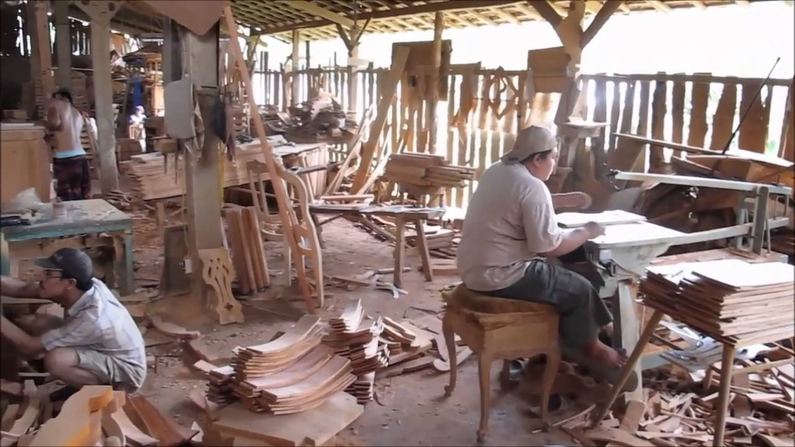
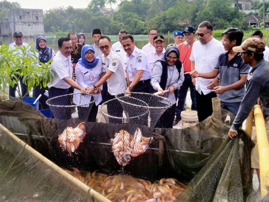
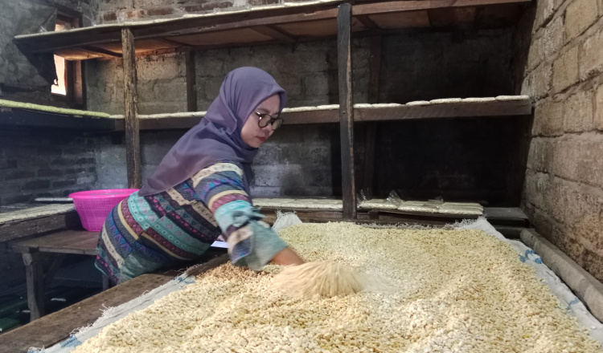

Potensi Desa Klewor
Desa Klewor memiliki berbagai potensi unggulan yang menjadi kekuatan utama dalam mendorong pertumbuhan ekonomi dan pelestarian budaya masyarakat. Potensi tersebut mencakup sektor pertanian yang subur, kerajinan lokal yang bernilai seni tinggi, serta tradisi dan kearifan lokal yang masih lestari hingga kini. Dengan pengelolaan yang baik, potensi ini mampu memberikan kesejahteraan bagi warga sekaligus menjadi daya tarik wisata budaya dan edukatif.

Pengrajin Mebel
Mayoritas penduduk yang memiliki profesi sebagai pengrajin mebel.

Waduk Kedung Ombo
Waduk Kedung Ombo yang terkenal sebagai tempat wisata.

Bisnis UMKM
Model bisnis yang beragam mulai dari tempe kedelai, tempe keripik, hingga krupuk gandum.